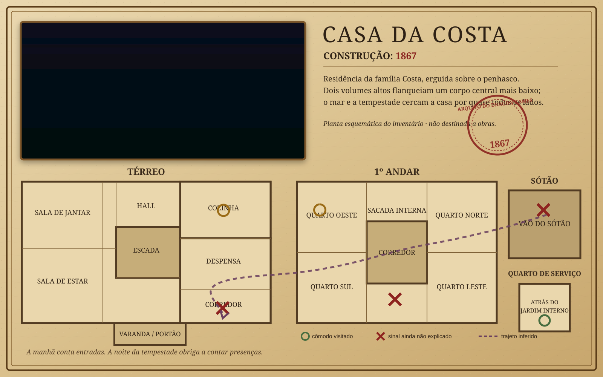

<!DOCTYPE html>
<html lang="pt-BR">
<head>
<meta charset="utf-8">
<meta name="viewport" content="width=device-width,initial-scale=1,viewport-fit=cover">
<meta name="theme-color" content="#080706">
<title>MOSAICO · Modo Solo · A Casa da Costa</title>
<link rel="icon" href="favicon.svg">
<link rel="preconnect" href="https://fonts.googleapis.com">
<link rel="preconnect" href="https://fonts.gstatic.com" crossorigin>
<link href="https://fonts.googleapis.com/css2?family=Cormorant+Garamond:wght@500;600;700&family=Outfit:wght@400;500;600;700&display=swap" rel="stylesheet">
<style>
:root{--bg:#080706;--panel:#15110d;--panel2:#1c1711;--paper:#d8c59e;--ink:#251c12;--fg:#f2ead9;--muted:#aaa08e;--line:#3c3124;--gold:#d3ad63;--gold2:#f0ce82;--red:#9b3d31;--blue:#6aa7bd;--green:#7d9b70;--display:"Cormorant Garamond",Georgia,serif;--body:Outfit,system-ui,sans-serif}
*{box-sizing:border-box}html,body{margin:0;min-height:100%;background:radial-gradient(900px 600px at 50% -10%,#23150c 0%,transparent 55%),var(--bg);color:var(--fg);font-family:var(--body)}button,select{font:inherit}.shell{width:min(620px,calc(100% - 28px));margin:auto;padding:max(18px,env(safe-area-inset-top)) 0 max(30px,env(safe-area-inset-bottom));min-height:100dvh}.top{display:flex;align-items:center;justify-content:space-between;gap:10px;margin-bottom:18px}.brand{font:700 13px var(--body);letter-spacing:.18em;text-transform:uppercase;color:var(--gold2)}.badge{padding:6px 9px;border:1px solid var(--line);border-radius:999px;color:var(--muted);font-size:12px}.k{font-size:11px;letter-spacing:.19em;text-transform:uppercase;color:var(--gold);font-weight:700}.hero{padding:22px;border:1px solid var(--line);border-radius:18px;background:linear-gradient(160deg,rgba(38,28,18,.97),rgba(15,12,9,.98));box-shadow:inset 0 1px rgba(255,255,255,.07),0 7px 0 #030302,0 20px 40px rgba(0,0,0,.45)}h1,h2,h3{font-family:var(--display);margin:.3rem 0}h1{font-size:clamp(42px,12vw,68px);line-height:.94}h2{font-size:clamp(30px,8vw,44px)}h3{font-size:24px}.lead{font:500 21px/1.42 var(--display);color:#d8cdb9}.muted{color:var(--muted);line-height:1.55}.btn{width:100%;min-height:52px;border:0;border-radius:11px;padding:13px 16px;font-weight:800;letter-spacing:.07em;text-transform:uppercase;background:linear-gradient(#f0ce82,#c89744);color:#211509;box-shadow:inset 0 1px rgba(255,255,255,.45),0 5px 0 #6d4315,0 12px 22px rgba(0,0,0,.38);cursor:pointer;margin-top:10px}.btn:active{transform:translateY(4px);box-shadow:inset 0 1px rgba(255,255,255,.22),0 1px 0 #6d4315}.btn.ghost{background:linear-gradient(#242019,#15110d);color:var(--gold2);box-shadow:inset 0 1px rgba(255,255,255,.08),0 5px 0 #030302}.btn.red{background:linear-gradient(#b95748,#853126);color:#fff5e8;box-shadow:inset 0 1px rgba(255,255,255,.2),0 5px 0 #45150f}.grid{display:grid;gap:12px;margin-top:16px}.choice{display:block;width:100%;text-align:left;border:1px solid var(--line);border-radius:14px;background:linear-gradient(160deg,#1b1712,#100d0a);padding:16px;color:var(--fg);box-shadow:inset 0 1px rgba(255,255,255,.05),0 5px 0 #030302;cursor:pointer}.choice b{display:block;font:600 24px var(--display);color:#fff}.choice span{display:block;margin-top:5px;color:var(--muted);line-height:1.4}.choice em{display:block;margin-top:8px;color:var(--gold);font-style:normal;font-size:11px;letter-spacing:.12em;text-transform:uppercase}.progress{height:7px;background:#211a13;border-radius:99px;overflow:hidden;margin:14px 0}.progress>i{display:block;height:100%;background:linear-gradient(90deg,var(--red),var(--gold));width:0;transition:.35s}.stage{display:flex;justify-content:space-between;align-items:end;gap:10px}.evidence{margin-top:14px;border:1px solid #806d50;border-radius:14px;background:linear-gradient(150deg,#d9c69f,#b59d70);color:var(--ink);padding:13px;box-shadow:0 6px 0 #5d4b34,0 16px 30px rgba(0,0,0,.36)}.evidence .meta{display:flex;justify-content:space-between;gap:8px;font:700 11px var(--body);letter-spacing:.1em;text-transform:uppercase;color:#6c5436}.puzzle{display:grid;grid-template-columns:1fr 1fr;gap:5px;margin:12px auto;width:min(340px,100%);aspect-ratio:4/3}.piece{border:0;border-radius:6px;min-height:0;position:relative;overflow:hidden;background:linear-gradient(135deg,#493723,#1c1510);color:#f0d49c;box-shadow:inset 0 0 0 1px rgba(255,255,255,.12);cursor:pointer}.piece::after{content:attr(data-mark);position:absolute;inset:0;display:grid;place-items:center;font:700 clamp(28px,10vw,58px) var(--display);opacity:.82;text-shadow:0 2px 10px #000}.piece.sel{outline:3px solid var(--red);transform:scale(.97)}.piece.ok{background:linear-gradient(135deg,#8a7044,#42331e)}.factbox{border-left:4px solid var(--gold);padding:12px 14px;background:#19140f;border-radius:8px;margin-top:14px}.factbox b{color:var(--gold2);display:block;font-size:11px;letter-spacing:.15em;text-transform:uppercase;margin-bottom:5px}.opts{display:grid;gap:9px;margin-top:14px}.opt{width:100%;text-align:left;padding:13px;border:1px solid var(--line);border-radius:10px;background:#14110e;color:var(--fg);cursor:pointer}.opt:hover,.opt.on{border-color:var(--gold)}.opt.good{border-color:var(--green);background:#142017}.opt.bad{border-color:var(--red);background:#241310}.relation{padding:16px;border:1px solid var(--line);border-radius:12px;background:#13100d;margin-top:12px}.relation .tags{display:flex;flex-wrap:wrap;gap:7px;margin-top:8px}.tag{padding:6px 9px;border-radius:999px;border:1px solid #695437;color:#dec894;background:#19130d;font-size:12px}.map{margin-top:14px;border:1px solid var(--line);border-radius:14px;overflow:hidden;background:#15110d;box-shadow:0 7px 0 #030302}.map img{display:block;width:100%;height:auto;opacity:.93}.mapnote{padding:12px 14px;color:var(--muted);line-height:1.45}.fields{display:grid;gap:12px;margin-top:15px}.field{padding:14px;border:1px solid var(--line);border-radius:12px;background:#15110d}.field label{display:block;color:var(--gold);font-size:11px;letter-spacing:.12em;text-transform:uppercase;margin-bottom:7px}.field select{width:100%;min-height:48px;background:#090806;color:var(--fg);border:1px solid #544332;border-radius:8px;padding:9px}.result{padding:20px;border:1px solid var(--line);border-top:3px solid var(--gold);border-radius:14px;background:#16120e;margin-top:16px}.score{font:700 64px/1 var(--display);color:var(--gold2)}.small{font-size:13px}.error{color:#f2a79b}.oktxt{color:#b8d6ad}.hide{display:none!important}@media(min-width:700px){.grid.two{grid-template-columns:1fr 1fr}}
</style>
</head>
<body><main id="app"></main>
<script>
'use strict';
const EVID={
 f1:{title:'As sete xícaras',icon:'☕',fact:'Sete xícaras limpas estavam secando na pia. Seis pessoas beberam chá naquela noite.',relation:'xícaras + poeira + despensa',inference:'rotina de habitação'},
 f2:{title:'A ausência de poeira',icon:'✦',fact:'Cozinha e corredor têm menos poeira que os demais cômodos após cinco meses de casa fechada.',relation:'xícaras + poeira + despensa',inference:'rotina de habitação'},
 f3:{title:'A despensa',icon:'▤',fact:'As latas seguem um padrão de organização compatível com uso continuado.',relation:'xícaras + poeira + despensa',inference:'rotina de habitação'},
 f4:{title:'O quarto degrau',icon:'⌁',fact:'O quarto degrau range sob carga; foi ouvido quando ninguém dos seis estava na escada.',relation:'degrau + colher + cadeira',inference:'massa e temperatura'},
 f5:{title:'A colher',icon:'⌇',fact:'Uma colher surgiu no piso do corredor após o apagão; não estava ali às 21h19.',relation:'degrau + colher + cadeira',inference:'objeto deslocado'},
 f6:{title:'A respiração',icon:'≈',fact:'A Jornalista ouviu respiração muito próxima durante o escuro, em ponto sem outro integrante do grupo.',relation:'respiração + sombra + posições',inference:'ponto ocupado'},
 f7:{title:'A sombra',icon:'◐',fact:'O Policial percebeu um vulto cruzando o corredor, compatível com um corpo entre ele e a janela.',relation:'respiração + sombra + posições',inference:'ponto ocupado'},
 f8:{title:'O nome',icon:'✉',fact:'Às 21h31 a secretária eletrônica reiniciou e reproduziu um nome que não pertence a nenhum dos seis.',relation:'nome + contrato',inference:'identidade da sétima pessoa'},
 f9:{title:'O contrato',icon:'§',fact:'O espólio registra pagamento de uma acompanhante por catorze meses, encerrado há cinco meses.',relation:'nome + contrato',inference:'identidade e período'},
 f10:{title:'As pegadas',icon:'⋰',fact:'No jardim interno há pegadas que entram e não saem, com numeração diferente da de todos os presentes.',relation:'pegadas + porta do jardim',inference:'localização'},
 f11:{title:'A porta do jardim',icon:'▯',fact:'A porta do antigo quarto de serviço está sem tranca e com dobradiça lubrificada recentemente.',relation:'pegadas + porta do jardim',inference:'quarto de serviço'},
 f12:{title:'A cadeira morna',icon:'♨',fact:'Às 21h35 uma cadeira do corredor estava acima da temperatura ambiente.',relation:'degrau + colher + cadeira',inference:'calor corporal'},
 f13:{title:'O consumo',icon:'◒',fact:'O hidrômetro mostra consumo diário durante os cinco meses em que a casa esteve considerada vazia.',relation:'consumo + visitas',inference:'ocupação contínua'},
 f14:{title:'O boiler',icon:'♨',fact:'Há acionamentos do boiler em dias diferentes das visitas semanais do Morador.',relation:'consumo + visitas',inference:'ocupação contínua'},
 f15:{title:'Queda em rede',icon:'⚡',fact:'A concessionária confirma interrupção às 21h29 em três casas da encosta e retorno às 21h31.',relation:'apagão + rede + disjuntor',inference:'apagão externo'},
 f16:{title:'O disjuntor',icon:'⏻',fact:'A chave geral permaneceu ligada e não apresenta sinal de acionamento manual.',relation:'apagão + rede + disjuntor',inference:'apagão não provocado'},
 f17:{title:'Caixa de passagem',icon:'▣',fact:'A caixa enterrada no jardim foi encontrada submersa, com oxidação recente.',relation:'apagão + rede + disjuntor',inference:'causa da queda'},
 f19:{title:'O higrômetro',icon:'⌁',fact:'Picos de umidade coincidem com os estalos regulares do sótão.',relation:'umidade + estalos',inference:'fenômeno estrutural'},
 f20:{title:'O cofre',icon:'□',fact:'O cofre estava apenas encostado; o envelope do inventário permanecia íntegro e nada foi subtraído.',relation:'cofre + envelope',inference:'não houve furto'}
};
const SETS={sete:['f1','f2','f4','f6','f7','f10','f9','f11'],cinco:['f1','f2','f3','f13','f14','f9'],apagao:['f4','f5','f6','f7','f15','f16','f17'],nome:['f8','f9','f13','f11'],corpo:['f19','f15','f4','f6','f7','f12','f20'],perceber:['f2','f13','f14','f9','f11','f1']};
const state={phase:'home',caso:null,key:null,i:0,order:[0,1,2,3],pick:null,seen:[],facts:{},relationAnswers:{},answers:{},scoreFacts:0,scoreRelations:0};
const app=document.getElementById('app');
function esc(s){return String(s??'').replace(/[&<>"']/g,c=>({'&':'&amp;','<':'&lt;','>':'&gt;','"':'&quot;',"'":'&#39;'}[c]));}
function shuffle(a){a=a.slice();for(let i=a.length-1;i>0;i--){let j=Math.floor(Math.random()*(i+1));[a[i],a[j]]=[a[j],a[i]];}return a;}
function header(){return '<div class="shell"><div class="top"><div class="brand">MOSAICO · MODO SOLO</div><div class="badge">A Casa da Costa · 1867</div></div>';}
async function load(){try{const r=await fetch('../v1/casos/casa-da-costa.json?v=20260830-solo');if(!r.ok)throw Error();state.caso=await r.json();}catch(e){app.innerHTML=header()+'<div class="hero"><span class="k">Falha de carregamento</span><h2>O caso não pôde ser aberto.</h2><p class="muted">Recarregue a página quando a conexão estiver disponível.</p></div></div>';return;}render();}
function render(){if(!state.caso)return;let h=header();if(state.phase==='home')h+=home();if(state.phase==='puzzle')h+=puzzle();if(state.phase==='fact')h+=fact();if(state.phase==='relations')h+=relations();if(state.phase==='map')h+=map();if(state.phase==='decision')h+=decision();if(state.phase==='result')h+=result();app.innerHTML=h+'</div>';}
function home(){let cards=Object.entries(state.caso.partidas||{}).map(([k,p])=>'<button class="choice" onclick="start(\''+k+'\')"><b>'+esc(p.titulo)+'</b><span>'+esc(p.pergunta)+'</span><em>'+esc(p.natureza)+'</em></button>').join('');return '<section class="hero"><span class="k">Uma verdade · várias perguntas</span><h1>A verdade é um fragmento.</h1><p class="lead">Reconstrua sozinho as evidências da Casa da Costa. Cada imagem abre um fato; fatos relacionados permitem inferências.</p><div class="grid">'+cards+'</div><p class="muted small" style="margin-top:16px">A realidade não muda. Muda a pergunta que você precisa responder.</p></section>';}
function start(k){state.key=k;state.i=0;state.seen=[];state.facts={};state.answers={};state.scoreFacts=0;state.scoreRelations=0;state.phase='puzzle';newPuzzle();render();}
function currentId(){return (SETS[state.key]||SETS.see)[state.i];}
function newPuzzle(){state.order=shuffle([0,1,2,3]);if(state.order.every((v,i)=>v===i))[state.order[0],state.order[1]]=[state.order[1],state.order[0]];state.pick=null;}
function puzzle(){let id=currentId(),e=EVID[id],p=state.caso.partidas[state.key],pct=Math.round(state.i/(SETS[state.key].length)*100);let pieces=state.order.map((n,i)=>'<button class="piece '+(state.pick===i?'sel ':'')+(n===i?'ok':'')+'" data-mark="'+esc(e.icon)+'" onclick="tap('+i+')"><span style="position:absolute;left:7px;top:5px;font-size:10px;opacity:.6">'+(n+1)+'</span></button>').join('');return '<div class="stage"><div><span class="k">'+esc(p.titulo)+'</span><h2>Evidência '+(state.i+1)+' de '+SETS[state.key].length+'</h2></div><div class="badge">'+pct+'%</div></div><div class="progress"><i style="width:'+pct+'%"></i></div><div class="evidence"><div class="meta"><span>Arquivo fragmentado</span><span>'+esc(id.toUpperCase())+'</span></div><h3>'+esc(e.title)+'</h3><div class="puzzle">'+pieces+'</div><p class="muted" style="color:#59452e">Toque em duas peças para trocar suas posições.</p></div><button class="btn ghost" onclick="state.phase=\'home\';render()">Trocar de partida</button>';}
function tap(i){if(state.pick===null){state.pick=i;render();return;}if(state.pick===i){state.pick=null;render();return;}let a=state.pick;[state.order[a],state.order[i]]=[state.order[i],state.order[a]];state.pick=null;if(state.order.every((v,n)=>v===n)){state.phase='fact';}render();}
function factOptions(e){let wrong=['Esse fato sozinho identifica quem estava na casa.','Esse fato prova que houve crime.','Esse fato já explica toda a noite.'];return shuffle([e.fact,...wrong]);}
function fact(){let id=currentId(),e=EVID[id];if(!state.facts[id])state.facts[id]={opts:factOptions(e),chosen:null};let f=state.facts[id];let opts=f.opts.map((o,i)=>'<button class="opt '+(f.chosen===i?(o===e.fact?'good':'bad'):'')+'" onclick="chooseFact('+i+')">'+esc(o)+'</button>').join('');return '<span class="k">FATO</span><h2>O que esta evidência permite afirmar diretamente?</h2><div class="factbox"><b>'+esc(e.title)+'</b><span>Evite transformar pista em conclusão.</span></div><div class="opts">'+opts+'</div>'+(f.chosen!==null?'<button class="btn" onclick="nextEvidence()">'+(state.i<SETS[state.key].length-1?'Próxima evidência':'Relacionar fatos')+'</button>':'');}
function chooseFact(i){let id=currentId(),e=EVID[id],f=state.facts[id];if(f.chosen!==null)return;f.chosen=i;if(f.opts[i]===e.fact)state.scoreFacts++;render();}
function nextEvidence(){let id=currentId();if(!state.seen.includes(id))state.seen.push(id);if(state.i<SETS[state.key].length-1){state.i++;newPuzzle();state.phase='puzzle';}else state.phase='relations';render();}
function relationGroups(){let ids=SETS[state.key],g={};ids.forEach(id=>{let e=EVID[id];(g[e.relation]||(g[e.relation]=[])).push(id)});return Object.entries(g).filter(x=>x[1].length>1);}
function relations(){let groups=relationGroups();let html=groups.map(([r,ids],idx)=>'<div class="relation"><span class="k">RELAÇÃO '+(idx+1)+'</span><h3>'+ids.map(id=>esc(EVID[id].title)).join(' + ')+'</h3><div class="tags">'+ids.map(id=>'<span class="tag">'+esc(EVID[id].fact.split('.')[0])+'</span>').join('')+'</div><p class="muted">Juntos, esses fatos sustentam: <b style="color:var(--gold2)">'+esc(EVID[ids[0]].inference)+'</b>.</p></div>').join('');return '<span class="k">FATO → RELAÇÃO → INFERÊNCIA</span><h2>Agora os fragmentos começam a conversar.</h2><p class="lead">Uma pista isolada é fraca. A relação entre fatos é o que torna a inferência auditável.</p>'+html+'<button class="btn" onclick="state.phase=\'map\';render()">Abrir a planta de 1867</button>';}
function map(){let p=state.caso.partidas[state.key];return '<span class="k">MAPA DA CASA</span><h2>Onde os fatos se encontram?</h2><p class="lead">Use a planta como síntese espacial. Não procure um culpado: procure onde a pergunta começa a fechar.</p><div class="map"><div class="mapnote"><b>'+esc(p.titulo)+'</b><br>'+esc(p.pergunta)+'</div></div><button class="btn" onclick="state.phase=\'decision\';render()">Responder à pergunta</button>';}
function decision(){let p=state.caso.partidas[state.key];let fields=(p.campos||[]).map(f=>'<div class="field"><label>'+esc(f.rotulo)+'</label><select id="f-'+esc(f.id)+'"><option value="">Escolha…</option>'+f.opcoes.map(o=>'<option>'+esc(o)+'</option>').join('')+'</select></div>').join('');return '<span class="k">INFERÊNCIA → DECISÃO</span><h2>'+esc(p.pergunta)+'</h2><p class="lead">Preencha os campos derivados desta pergunta. Depois do envio, a resposta será comparada à realidade canônica.</p><div class="fields">'+fields+'</div><button class="btn red" onclick="finish()">Fechar minha conclusão</button><button class="btn ghost" onclick="state.phase=\'relations\';render()">Rever relações</button>';}
function finish(){let p=state.caso.partidas[state.key],all=true,correct=0;state.answers={};(p.campos||[]).forEach(f=>{let el=document.getElementById('f-'+f.id),v=el?el.value:'';if(!v)all=false;state.answers[f.id]=v;if(v===f.resposta)correct++;});if(!all){alert('Preencha todos os campos antes de fechar a conclusão.');return;}state.correct=correct;state.phase='result';render();}
function result(){let p=state.caso.partidas[state.key],total=p.campos.length,fieldPct=Math.round(100*state.correct/total),factPct=Math.round(100*state.scoreFacts/SETS[state.key].length),score=Math.round(fieldPct*.7+factPct*.3);let rows=p.campos.map(f=>'<div class="relation"><span class="k">'+esc(f.rotulo)+'</span><p style="margin:.35rem 0"><b>Sua resposta:</b> '+esc(state.answers[f.id])+'</p><p class="muted" style="margin:0"><b>Canônica:</b> '+esc(f.resposta)+'</p></div>').join('');return '<span class="k">REVELAÇÃO</span><h2>'+esc(p.titulo)+'</h2><div class="result"><div class="score">'+score+'</div><p class="muted">Índice desta execução · 30% leitura factual + 70% decisão</p><p class="lead">'+esc(p.revelacao)+'</p></div>'+rows+'<div class="factbox"><b>Realidade canônica</b><span>'+esc(state.caso.realidadeCanonica.sintese)+'</span></div><button class="btn" onclick="start(\''+state.key+'\')">Jogar esta pergunta novamente</button><button class="btn ghost" onclick="state.phase=\'home\';render()">Escolher outra pergunta</button>';}
load();
</script>
</body></html>